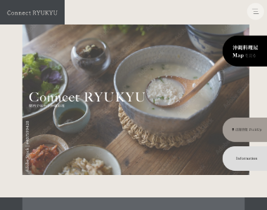
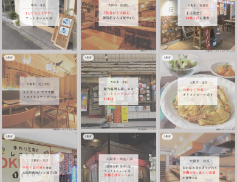

自主制作
コネクト琉球（メディアサイト）

ページ全体（スクロールできます）
Background
制作背景
- クライアント
- 一般社団法人 関西沖縄県交流会（仮想）
- ターゲット
- 関西エリアで沖縄料理店を探している方や、沖縄料理・沖縄文化に興味のある方
- 目的・狙い
-
- 関西にある沖縄料理店の魅力を発信し、来店促進や地域コミュニティの活性化につなげること。
- 要望
-
- 関西にある沖縄料理店の魅力を発信し、初めて訪れる方でも店舗を探しやすく、沖縄らしい雰囲気を感じられる情報サイトを制作したい。
Concept
コンセプト
- 与えたいイメージ
- 落ち着き・親しみやすさ・沖縄らしさ
- フォント
- Shippori Mincho
- カラー
-
アクセントカラーを抑え、料理や店舗写真が引き立つ落ち着いた配色を意識した。
Point
ポイント
- ◾️沖縄らしさと洗練された雰囲気を両立したデザイン
- 沖縄の魅力を伝えるサイトであることから、料理や街並みなど沖縄らしさを感じられる使用した一方で、配色は淡いグレーを基調とし、余白を活かしたレイアウトにすることで、落ち着きのある洗練された雰囲気を表現した。
- ◾️情報を探しやすい設計
- 店舗をエリアごとに探せるマップや店舗一覧、ピックアップ情報をトップページに配置し、利用者が目的の店舗へスムーズにアクセスできる情報設計を意識しました。


Overview
概要
- 作業工程
- 企画／設計／ワイヤーフレーム作成／デザイン
- 使用ツール・言語
-
- XD（ワイヤーフレーム作成、デザイン）
- Photoshop、Illustrator（画像加工、トリミング）
- 制作期間
-
- ■ 1週間
- 企画：3日間
- 設計、デザイン：4日